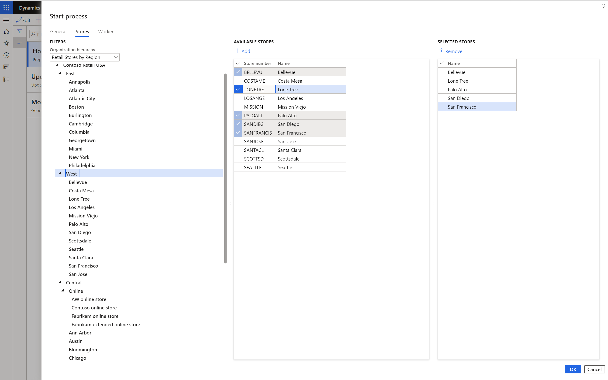
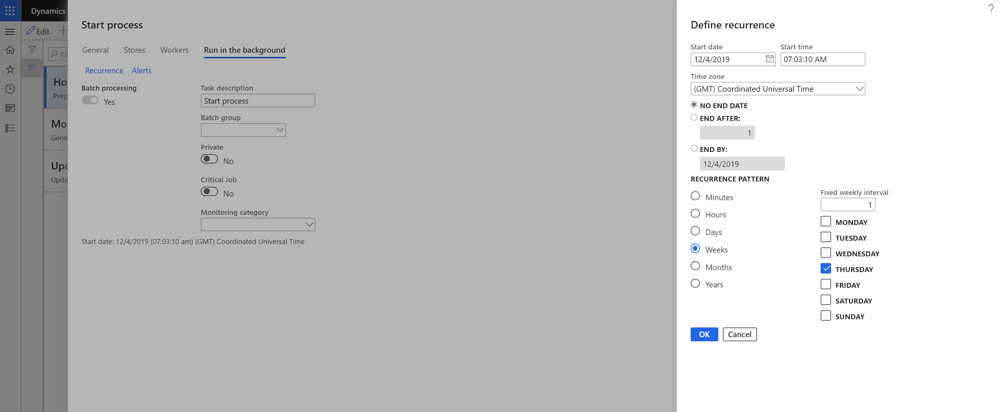

Aufgabenlisten zu Filialen oder Mitarbeitern zuordnen
Important
Dynamics 365 Retail ist jetzt Dynamics 365 Commerce und bietet umfassende Handelsfunktionen für alle Kanäle – von E-Commerce über Shops bis hin zu Callcentern. Weitere Informationen zu diesen Änderungen finden Sie unter Microsoft Dynamics 365 Commerce.
In diesem Thema wird beschrieben, wie Sie den Filialen oder Mitarbeitern in Microsoft Dynamics 365 Commerce Aufgabenlisten zuweisen.
Übersicht
Mit der Aufgabenverwaltung in Dynamics 365 Commerce können Sie eine Aufgabenliste mehreren Filialen oder Mitarbeitern oder einer Kombination aus Filialen und Mitarbeitern zuweisen. Beispielsweise könnte ein Regionalmanager für 20 Filialen allen 20 Filialen die Aufgabenliste Feiertagssaisonvorbereitung zuweisen wollen.
Starten Sie den Prozess der Aufgabenlistenzuweisung
Um den Prozess der Zuweisung eines Aufgabenplans zu beginnen, führen Sie die folgenden Schritte aus.
Gehen Sie zu Retail and Commerce > Aufgabenverwaltung > Aufgabenverwaltung Verwaltung.
Wählen Sie die Aufgabenliste, die Sie zuweisen möchten.
Wählen Sie Prozess starten.
Geben Sie im Dialogfeld Prozess starten auf der Registerkarte Allgemein im Feld Prozessname einen Namen ein (z.B. Ostliche Region speichert).
Geben Sie im Feld Zieldatum ein Datum ein.
Um die Aufgabenliste den Filialen zuzuordnen, verwenden Sie auf der Registerkarte Filialen den Filter Organisationshierarchie, um die Filialen zu finden und auszuwählen.
Um die Aufgabenliste den Mitarbeitern zuzuordnen, suchen und wählen Sie auf der Registerkarte Arbeiter die Mitarbeiter aus.
Wählen Sie OK, um den Prozess zu starten. Die Aufgabenliste wird den ausgewählten Filialen oder Mitarbeitern zugeordnet.
Die folgende Abbildung zeigt ein Beispiel für die Suche und Auswahl von Filialen im Dialogfenster Prozess starten.

Aufgabenlisten auf wiederkehrender Basis zuweisen
Einzelhändler haben manchmal wiederkehrende Aufgaben, wie z.B. „Checkliste für den Donnerstagabschluss“ oder „Checkliste für den ersten Tag des Monats“. Daher möchten sie die Aufgabenliste möglicherweise auf einer wiederkehrenden Basis zuweisen.
- Gehen Sie zu Retail and Commerce > Aufgabenverwaltung > Aufgabenverwaltung Verwaltung.
- Wählen Sie die Aufgabenliste, die Sie zuweisen möchten.
- Wählen Sie Prozess starten.
- Geben Sie im Dialogfenster Prozess starten auf der Registerkarte Allgemein im Feld Prozessname einen Namen ein.
- Setzen Sie die Option Wiederholung auf Ja.
- Geben Sie im Feld Wiederholungszieldatumverschiebung in Tagen eine Anzahl von Tagen ein. Wenn Sie z.B. 4 eingeben, ist das Zieldatum das Wiederholungsdatum plus vier Tage.
- Wählen Sie auf der Registerkarte Im Hintergrund ausführen Wiederholung.
- Geben Sie im Dialogfenster Wiederholung definieren die Häufigkeitskriterien ein und wählen Sie OK.
Die folgende Abbildung zeigt ein Beispiel für die Eingabe von Häufigkeitskriterien im Dialogfenster Rezidivierung definieren.

Verfolgen Sie den Status der Aufgabenliste
Wenn Sie ein Regionalleiter oder Filialleiter sind, möchten Sie vielleicht den Status von Aufgabenlisten verfolgen, die mehreren Filialen oder Mitarbeitern zugeordnet wurden. Sie können dann die Filialen oder Mitarbeiter nachverfolgen, die die ihnen zugewiesenen Aufgaben nicht rechtzeitig erledigt haben. Im Backoffice des Handels können Sie den Status von Aufgabenlisten anzeigen, Aufgaben neu zuweisen oder den Status einer Aufgabe ändern.
Um den Aufgabenlistenstatus für alle Aufgaben zu verfolgen, führen Sie die folgenden Schritte aus.
- Gehen Sie zu Retail and Commerce > Aufgabenverwaltung > Aufgabenverwaltungsprozesse.
- Wählen Sie die Registerkarte Alle Aufgabenlisten, um den Status aller Aufgabenlisten anzuzeigen, die verschiedenen Geschäften zugeordnet sind.
Um den Aufgabenlistenstatus für alle Ihnen zugewiesenen Aufgaben zu verfolgen, führen Sie die folgenden Schritte aus.
- Gehen Sie zu Retail and Commerce > Aufgabenverwaltung > Aufgabenverwaltungsprozesse.
- Wählen Sie die Registerkarte Meine Aufgaben oder Alle Aufgaben, um den Status der Ihnen zugewiesenen Aufgaben anzuzeigen oder zu aktualisieren.
Zusätzliche Ressourcen
Übersicht über die Aufgabenverwaltung
Aufgabenverwaltung konfigurieren